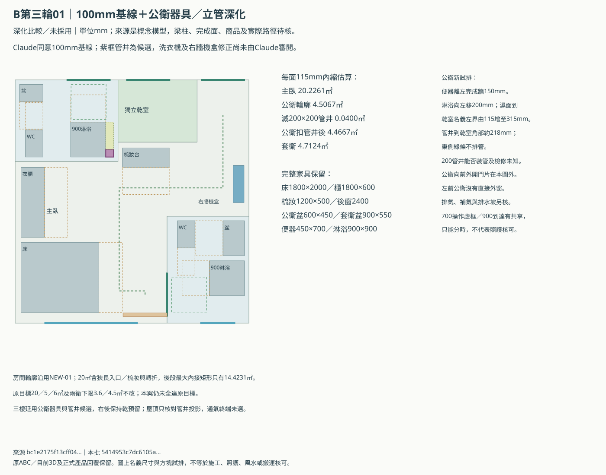
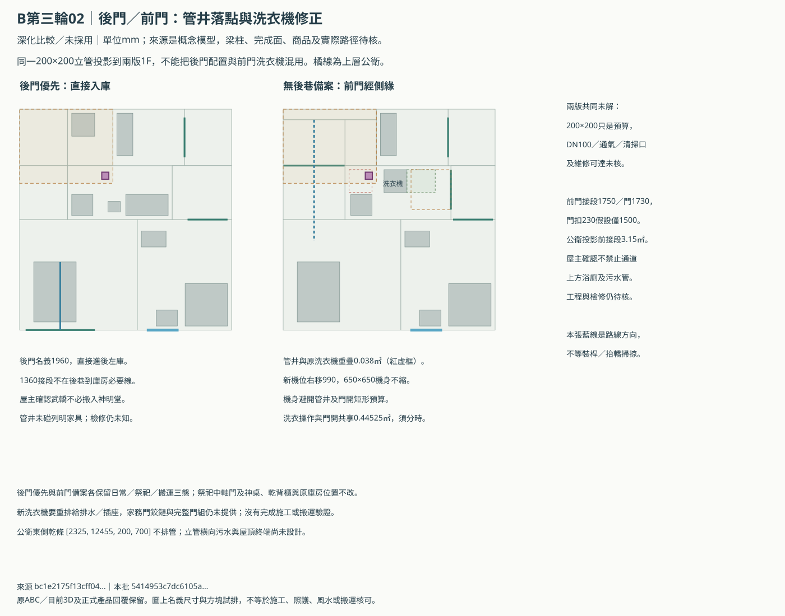
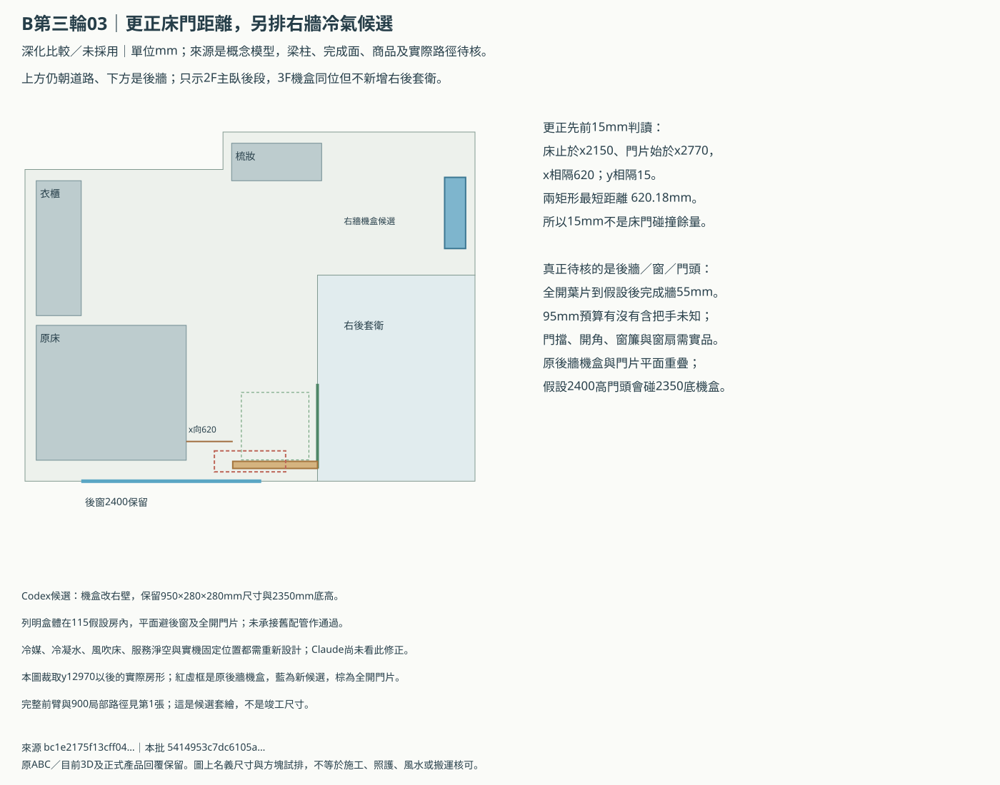

B棟第三輪：以套衛後移100mm為深化基線
Claude第三輪同意100mm比較；Codex已核對公衛器具、管井、兩版一樓及床門距離，另畫出洗衣機與右牆冷氣修正。
研究比較，尚未採用，沒有整體風水或施工通過結論。 原主臥20㎡、公衛5㎡、套衛6㎡目標未更動；前後門兩版、原3D及149份控制保留。兩模型只對明列內容形成局部共識。
主臥多留餘量，兩衛仍低於原目標
| 研究版本／115mm假設 | 主臥㎡ | 公衛輪廓㎡ | 扣管井後㎡ | 套衛㎡ |
|---|---|---|---|---|
| NEW-01 | 20.2261 | 4.5067 | 未設管井 | 4.7124 |
| NEW-01b | 20.2261 | 4.5067 | 4.4667 | 4.7124 |
NEW-01b的管井占0.04㎡，公衛可用估算降到4.4667㎡；不能把輪廓4.5067㎡當作扣完管井的面積。兩衛仍高於原3.6／4.5㎡下限，但不等於接受降低5／6㎡目標。
主臥20.2261㎡包含入口與轉折，後段最大內接矩形14.4231㎡。100mm後移只把主臥守住20㎡的每面內縮臨界由115.68增至124.60mm，不代表多100mm施工工差。
公衛外窗是本案代價：左前公衛沒有直接外窗。獨立排氣、補氣與終端尚未排，不能把側界假窗當合法外窗；若外窗是硬條件，須重排此案。
在固定後段37.56㎡、乾室3.248㎡及三房各自每面內縮115mm的模型內，20／5／6㎡理想三房至少還缺1.05924㎡。這是指定假設的必要面積界，不是土地不能建的通用證明。
Claude另提「保兩衛5／6㎡」的輪廓：主臥18.238㎡、公衛5.00075㎡、套衛6.00083㎡；若加同管井，公衛只剩4.96075㎡。此方向尚未完整排器具、門窗與路徑，不列為完成方案，也沒有放棄20㎡主臥。
先看這三張





後門直入與前門備案各自保留
後巷到後左庫不必經1360mm接段，這點兩模型已一致。屋主本輪確認武轎不必搬進神明堂，因此不把該內部接段當本方案的祭祀必經搬轎線；若將來改用途，要另重排。
前門版的公衛管井原本撞洗衣機0.038㎡。Codex將650×650mm機身右移990mm，避開管井及家務門的矩形開啟預算；洗衣操作與門開仍共享0.44525㎡，必須分時。給排水與插座要重排，此修正尚未給Claude審閱。
前門1730名義門扣230假設後僅1500mm，沒有產品或施工餘量；公衛在前方搬轎接段上方投影3.15㎡。屋主本輪確認不禁止通道上方浴廁污水管，這項家規已釐清；橫管、降板、防水與維修仍待工程核圖。
200×200管井、橫排坡度、清掃口、樓板降板、防水與屋頂通氣終端未核；三樓只有一間公衛，右後仍是乾區。右牆冷氣只核盒體位置，完整配管與氣流未知。
三項家規已確認，面積與外窗尚未定案
| 屋主已確認的家規 | 本輪答覆 | 影響 |
|---|---|---|
| 武轎祭祀時是否必須搬進神明堂？ | 否 | 屋主確認不必進神明堂；後門到庫房可獨立研究，不需要把1360接段當祭祀必經線。 |
| 搬轎通道上方是否禁止浴廁與污水管？ | 否 | 屋主確認不禁止通道上方浴廁／污水管；仍須機電、防水、檢修及衛生工程核對。 |
| 武轎庫上方是否禁止臥室？ | 否 | 屋主確認不禁止庫房上方臥室；仍保留庫房上方不得有浴廁的原規則。 |
本輪答覆原文「1.否 2. 否 3. 否」已保存在屋主答覆來源。沒有取消神桌朝街、中軸門、完整神明堂／乾背櫃保護或武轎庫上方禁浴廁等原規則。
仍需用正式牆線釐清「神明堂／背櫃投影是否連整道共牆厚度都須避開」。本案名義界線雖不重疊，並未證明牆厚、梁柱及污水橫管都已避開。
模型共識與Codex新增修正分開記錄
| 議題 | 核對結果 |
|---|---|
| 套衛後移100mm研究基線 | Claude第三輪同意NEW-01優於原案；Codex重算20.2261／4.5067／4.7124。 |
| 後門直入不經1360 | 只限後巷到庫房；從庫房進神明堂的內部路線仍未知。前門備案另外保留。 |
| 床與門片的15mm說法 | 15是y軸投影差，真正矩形距離620.18；後牆55mm及後窗／門頭另核。 |
| 公衛便器移150、淋浴移200及200立管候選 | 列明本體不撞；立管扣0.04㎡後公衛4.4667。原前門洗衣機被立管撞0.038㎡。 |
| 前門洗衣機右移990 | 原650×650機身保留；移位避立管與門掃掠本體，洗衣操作與門開預算分時。Claude未看此修正。 |
| 主臥及三樓機盒改右牆 | 保950×280×280機盒，避後窗／門片；氣流、冷媒、排水與維修路徑未核，Claude未看。 |
| 115內縮模型中的面積限制 | 固定後段及乾室下，20／5／6理想三房至少缺1.05924㎡；只限明列假設，原需求不改。 |
| 屋主三項家規答覆 | 不必搬進神明堂、不禁轎路上方浴廁污水管、不禁庫房上方臥室。僅限這三項，既有保護規則不變。 |
| 保護界線、現地、門組與機電 | 牆帶／梁柱／排氣／開窗權利及完整配管待專業資料；不能從三項家規答覆推出整體採用。 |
完整共識表／坐標、計算與來源／Claude第三輪原回覆／上輪凍結比較。
第三輪回覆按原response檔bytes保存，prompt／stdout雜湊與原結果已核。這輪沒有再啟動雲端討論、瀏覽器或WebGL；原畫面的歷史passed沒有當作本批驗收。
bc1e2175f13cff043deeb725e190a3b59908810f58661d9efadec05efbca9a5e本批
5414953c7dc6105adc17aaefe1fba1e8da40845fff7f3451db28e8a93f25df55｜靜態比較，沒有採用或專業核可。